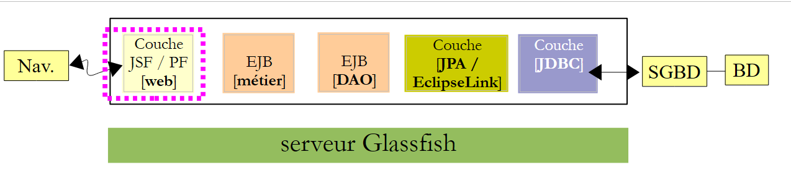
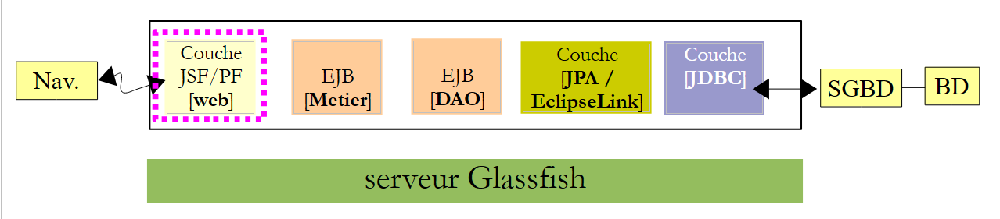
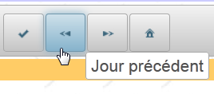
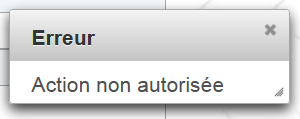
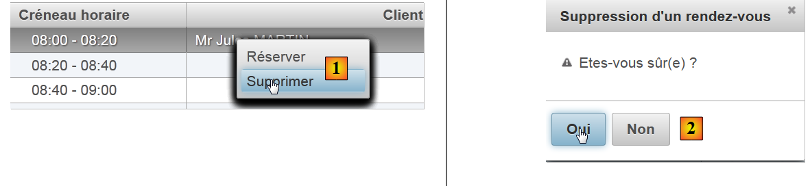
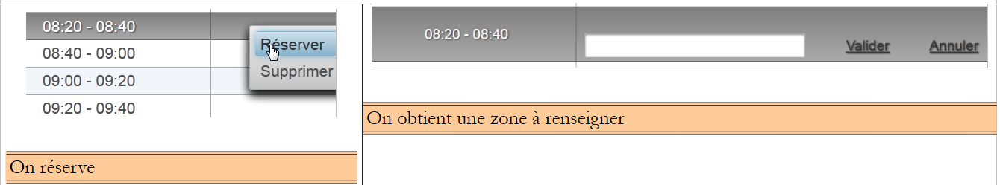
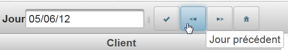
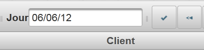
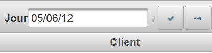
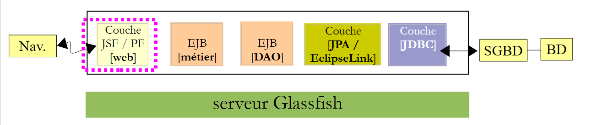

6. تطبيق نموذجي-03: rdvmedecins-pf-ejb
دعونا نستعرض بنية التطبيق النموذجي الذي تم تطويره لخادم GlassFish:
 |
لن نغير أي شيء في هذه البنية باستثناء طبقة الويب، التي سيتم تنفيذها هنا باستخدام JSF و PrimeFaces.
 |
6.1. مشروع NetBeans
أعلاه، الطبقتان [business] و [DAO] هما نفس الطبقتين الموجودتين في المثال 01 JSF / EJB / Glassfish. نحن نعيد استخدامهما.
 |
- [mv-rdvmedecins-ejb-dao-jpa]: مشروع EJB لطبقات [DAO] و[JPA] من المثال 01،
- [mv-rdvmedecins-ejb-metier]: مشروع EJB لطبقة [الأعمال] من المثال 01،
- [mv-rdvmedecins-pf]: مشروع طبقة [الويب] / Primefaces – جديد،
- [mv-rdvmedecins-app-ear]: مشروع مؤسسي لنشر التطبيق على خادم GlassFish – جديد.
6.2. مشروع المؤسسة
يُستخدم مشروع المؤسسة حصريًا لنشر الوحدات الثلاث [mv-rdvmedecins-ejb-dao-jpa]، [mv-rdvmedecins-ejb-business]، [mv-rdvmedecins-pf] على خادم GlassFish. مشروع NetBeans هو كما يلي:
 |
يوجد المشروع حصريًا لهذه التبعيات الثلاث [1] المحددة في ملف [pom.xml] على النحو التالي:
<?xml version="1.0" encoding="UTF-8"?>
<project xmlns="http://maven.apache.org/POM/4.0.0" xmlns:xsi="http://www.w3.org/2001/XMLSchema-instance" xsi:schemaLocation="http://maven.apache.org/POM/4.0.0 http://maven.apache.org/xsd/maven-4.0.0.xsd">
<modelVersion>4.0.0</modelVersion>
<parent>
<artifactId>mv-rdvmedecins-app</artifactId>
<groupId>istia.st</groupId>
<version>1.0-SNAPSHOT</version>
</parent>
<groupId>istia.st</groupId>
<artifactId>mv-rdvmedecins-app-ear</artifactId>
<version>1.0-SNAPSHOT</version>
<تعبئة>ear</تعبئة>
<name>mv-rdvmedecins-app-ear</name>
...
<التبعيات>
<التبعية>
<groupId>${project.groupId}</groupId>
<artifactId>mv-rdvmedecins-ejb-dao-jpa</artifactId>
<version>${project.version}</version>
<النوع>ejb</النوع>
</التبعية>
<التبعية>
<groupId>${project.groupId}</groupId>
<معرف_المنتج>mv-rdvmedecins-ejb-metier</معرف_المنتج>
<version>${project.version}</version>
<type>ejb</type>
</التبعية>
<التبعية>
<groupId>${project.groupId}</groupId>
<artifactId>mv-rdvmedecins-pf</artifactId>
<version>${project.version}</version>
<type>war</type>
</dependency>
</التبعيات>
</project>
- الأسطر 10–13: عنصر Maven الخاص بمشروع المؤسسة،
- الأسطر 18–37: التبعيات الثلاثة للمشروع. لاحظ أنواعها (الأسطر 23 و29 و35).
لتشغيل تطبيق الويب، يجب عليك تشغيل مشروع المؤسسة هذا.
6.3. مشروع الويب PrimeFaces
مشروع الويب PrimeFaces هو كما يلي:
 |
- في [1]، صفحات المشروع. صفحة [index.xhtml] هي الصفحة الوحيدة في المشروع. وهي تحتوي على ثلاثة أجزاء: [form1.xhtml] و[form2.xhtml] و[error.xhtml]. أما الصفحات الأخرى فهي مدرجة لأغراض التنسيق فقط.
- في [2]، حبوب Java. حبة [Application] لها نطاق التطبيق، وحبة [Form] لها نطاق الجلسة. تغلف فئة [Error] الخطأ. تعمل فئة [MyDataModel] كنموذج لعلامة PrimeFaces <dataTable>،
- في [3]، ملفات الرسائل للتدويل،
- في [4]، التبعيات. يعتمد مشروع الويب على مشروع EJB لطبقة [DAO]، ومشروع EJB لطبقة [business]، و PrimeFaces لطبقة [web].
6.4. تكوين المشروع
تكوين المشروع هو نفسه تكوين مشاريع PrimeFaces أو JSF التي درسناها. ندرج ملفات التكوين دون إعادة شرحها.
 |  |
[web.xml]: يقوم بتكوين تطبيق الويب.
<?xml version="1.0" encoding="UTF-8"?>
<web-app version="3.0" xmlns="http://java.sun.com/xml/ns/javaee" xmlns:xsi="http://www.w3.org/2001/XMLSchema-instance" xsi:schemaLocation="http://java.sun.com/xml/ns/javaee http://java.sun.com/xml/ns/javaee/web-app_3_0.xsd">
<context-param>
<param-name>javax.faces.STATE_SAVING_METHOD</param-name>
<param-value>client</param-value>
</context-param>
<معلمة السياق>
<اسم_المعلمة>javax.faces.PROJECT_STAGE</اسم_المعلمة>
<param-value>الإنتاج</param-value>
</معلمة-السياق>
<معلمة السياق>
<اسم-المعلمة>javax.faces.FACELETS_SKIP_COMMENTS</اسم-المعلمة>
<قيمة-المعلمة>صحيح</قيمة-المعلمة>
</معلمة-السياق>
<servlet>
<servlet-name>Faces Servlet</servlet-name>
<فئة-الخادم>javax.faces.webapp.FacesServlet</فئة-الخادم>
<تحميل عند بدء التشغيل>1</تحميل عند بدء التشغيل>
</servlet>
<تعيين-الخادم>
<servlet-name>Faces Servlet</servlet-name>
<url-pattern>/faces/*</url-pattern>
</تعيين-الخادم>
<تكوين-الجلسة>
<session-timeout>
30
</مؤقت-الجلسة>
</تكوين-الجلسة>
<قائمة ملفات الترحيب>
<ملف الترحيب>faces/index.xhtml</ملف الترحيب>
</قائمة-ملفات-الترحيب>
<صفحة-الخطأ>
<رمز الخطأ>500</رمز الخطأ>
<الموقع>/faces/exception.xhtml</الموقع>
</صفحة-الخطأ>
<صفحة-الخطأ>
<نوع-الاستثناء>استثناء</نوع-الاستثناء>
<الموقع>/faces/exception.xhtml</الموقع>
</صفحة-الخطأ>
</تطبيق-ويب>
لاحظ أن الصفحة [index.xhtml] في السطر 30 هي الصفحة الرئيسية للتطبيق.
[faces-config.xml]: تكوين تطبيق JSF
<?xml version='1.0' encoding='UTF-8'?>
<!-- =========== ملف التكوين الكامل ================================== -->
<faces-config version="2.0"
xmlns="http://java.sun.com/xml/ns/javaee"
xmlns:xsi="http://www.w3.org/2001/XMLSchema-instance"
xsi:schemaLocation="http://java.sun.com/xml/ns/javaee http://java.sun.com/xml/ns/javaee/web-facesconfig_2_0.xsd">
<application>
<حزمة الموارد>
<base-name>
الرسائل
</base-name>
<var>msg</var>
</حزمة-الموارد>
<حزمة-الرسائل>الرسائل</حزمة-الرسائل>
</تطبيق>
</تكوين-الواجهات>
[beans.xml]: فارغ ولكنه مطلوب للتعليق التوضيحي @Named
<?xml version="1.0" encoding="UTF-8"?>
<beans xmlns="http://java.sun.com/xml/ns/javaee"
xmlns:xsi="http://www.w3.org/2001/XMLSchema-instance"
xsi:schemaLocation="http://java.sun.com/xml/ns/javaee http://java.sun.com/xml/ns/javaee/beans_1_0.xsd">
</beans>
[styles.css]: ورقة أنماط التطبيق
.col1{
لون الخلفية: #ccccff
}
.col2{
لون الخلفية: #ffcccc
}
تأتي مكتبة PrimeFaces مع أوراق أنماط خاصة بها. تُستخدم ورقة الأنماط أعلاه فقط للصفحة التي سيتم عرضها في حالة حدوث استثناء — وهي صفحة لا يديرها التطبيق. ثم يتم عرض الصفحة [exception.xhtml].
[messages_fr.properties]: ملف الرسائل باللغة الفرنسية
# التخطيط
layout.entete=Les M\u00e9decins Associ\u00e9s
layout.basdepage=ISTIA، جامعة أنجيه - تطبيق مدعوم بواسطة PrimeFaces وJQuery
# استثناء
exception.header=حدثت الاستثناء التالي
exception.httpCode=رمز HTTP للخطأ
exception.message=رسالة الاستثناء
exception.requestUri=عنوان URL المطلوب عند حدوث الخطأ
exception.servletName=اسم السيرفلت المطلوب عند حدوث الخطأ
# النموذج 1
form1.titre=الحجوزات
form1.medecin=الطبيب
form1.jour=اليوم
نموذج1.خيارات=خيارات
form1.francais=الفرنسية
form1.anglais=الإنجليزية
form1.rafraichir=تحديث
form1.precedent=اليوم السابق
form1.suivant=اليوم التالي
form1.agenda=عرض جدول مواعيد الطبيب المختار لليوم المحدد
form1.today=اليوم
# النموذج 2
form2.titre=جدول مواعيد {0} {1} {2} في {3}
form2.titre_detail=جدول {0} {1} {2} في {3}
form2.creneauHoraire=الوقت المحدد
form2.client=العميل
form2.accueil=الصفحة الرئيسية
form2.supprimer=حذف
form2.reserver=حجز
form2.valider=تأكيد
form2.annuler=إلغاء
form2.erreur=خطأ
form2.emtyMessage=لم يتم إدخال أي قنوات في قاعدة البيانات
form2.suppression.confirmation=هل أنت متأكد؟
form2.suppression.message=حذف موعد
form2.supprimer.oui=نعم
form2.supprimer.non=لا
form2.erreurClient=عميل [{0}] غير معروف
form2.erreurClient_detail=عميل {0} غير معروف
form2.erreurAction=إجراء غير مسموح به
form2.erreurAction_detail=إجراء غير مسموح به
# خطأ
erreur.titre=حدث خطأ.
erreur.exceptions=سلسلة الاستثناءات
erreur.type=نوع الاستثناء
erreur.message=الرسالة المرتبطة
erreur.accueil=الصفحة الرئيسية
[messages_en.properties]: ملف الرسائل باللغة الإنجليزية
# التخطيط
layout.entete=الأطباء المرتبطون
layout.basdepage=ISTIA، جامعة أنجيه - تطبيق مدعوم بواسطة PrimeFaces وJQuery
# استثناء
exception.header=حدثت الاستثناءات التالية
exception.httpCode=رمز خطأ HTTP
exception.message=رسالة الاستثناء
exception.requestUri=عنوان URL المستهدف عند حدوث الخطأ
exception.servletName=اسم السيرفلت المستهدف عند حدوث الخطأ
# النموذج 1
form1.titre=الحجوزات
form1.medecin=الطبيب
form1.jour=التاريخ
نموذج1.خيارات=خيارات
form1.francais=الفرنسية
form1.anglais=الإنجليزية
form1.rafraichir=تحديث
form1.precedent=اليوم السابق
form1.suivant=اليوم التالي
form1.agenda=عرض جدول مواعيد الطبيب المحدد لليوم المحدد
form1.today=اليوم
# النموذج 2
form2.titre={0} {1} {2}'' يوميات في {3}
form2.titre_detail={0} {1} {2}'' يوميات في {3}
form2.creneauHoraire=الفترة الزمنية
form2.client=العميل
form2.accueil=صفحة الترحيب
form2.supprimer=حذف
form2.reserver=حجز
form2.valider=إرسال
form2.annuler=إلغاء
form2.erreur=خطأ
form2.emtyMessage=لا توجد فترات زمنية في قاعدة البيانات
form2.suppression.confirmation=هل أنت متأكد؟
form2.suppression.message=حذف الحجز
form2.supprimer.oui=نعم
form2.supprimer.non=لا
form2.erreurClient=عميل غير معروف {0}
form2.erreurClient_detail=عميل غير معروف [{0}]
form2.erreurAction=إجراء غير مصرح به
form2.erreurAction_detail=إجراء غير مصرح به
# خطأ
erreur.titre=حدثت الاستثناءات التالية
erreur.exceptions=سلسلة الاستثناءات
erreur.type=نوع الاستثناء
erreur.message=الرسالة المرتبطة
erreur.accueil=مرحبًا
6.5. قالب الصفحة [layout.xhtml]
 |
قالب [layout.xhtml] هو كما يلي:
<?xml version='1.0' encoding='UTF-8' ?>
<!DOCTYPE html PUBLIC "-//W3C//DTD XHTML 1.0 Transitional//EN" "http://www.w3.org/TR/xhtml1/DTD/xhtml1-transitional.dtd">
<html xmlns="http://www.w3.org/1999/xhtml"
xmlns:h="http://java.sun.com/jsf/html"
xmlns:p="http://primefaces.org/ui"
xmlns:f="http://java.sun.com/jsf/core"
xmlns:ui="http://java.sun.com/jsf/facelets">
<f:view locale="#{form.locale}">
<h:head>
<title>JSF</title>
<h:outputStylesheet library="css" name="styles.css"/>
</h:head>
<h:body style="background-image: url('#{request.contextPath}/resources/images/standard.jpg');">
<h:form id="formulaire">
<table style="width: 1200px">
<tr>
<td colspan="2" bgcolor="#ccccff">
<ui:include src="entete.xhtml"/>
</td>
</tr>
<tr>
<td style="width: 10px;" bgcolor="#ffcccc">
<ui:include src="menu.xhtml"/>
</td>
<td>
<p:outputPanel id="contenu">
<ui:insert name="contenu">
<h2>المحتوى</h2>
</ui:insert>
</p:outputPanel>
</td>
</tr>
<tr bgcolor="#ffcc66">
<td colspan="2">
<ui:include src="basdepage.xhtml"/>
</td>
</tr>
</table>
</h:form>
</h:body>
</f:view>
</html>
الجزء المتغير الوحيد في هذا القالب هو المنطقة الموجودة في الأسطر 28–30. تقع هذه المنطقة في معرف :form:content (السطر 27). ضع هذا في اعتبارك. ستحتوي استدعاءات AJAX التي تقوم بتحديث هذه المنطقة على السمة update=":form:content". علاوة على ذلك، يبدأ النموذج في السطر 15. لذلك، يتم إدراج الجزء المضاف في الأسطر 28–30 في هذا النموذج.
ينتج هذا القالب النتيجة التالية:
 |
سيتم إدراج الجزء الديناميكي من الصفحة في المساحة المحددة أعلاه.
6.6. صفحة [index.xhtml]
 |
يعرض المشروع دائمًا نفس الصفحة، وهي صفحة [index.xhtml] التالية:
<?xml version='1.0' encoding='UTF-8' ?>
<!DOCTYPE html PUBLIC "-//W3C//DTD XHTML 1.0 Transitional//EN" "http://www.w3.org/TR/xhtml1/DTD/xhtml1-transitional.dtd">
<html xmlns="http://www.w3.org/1999/xhtml"
xmlns:h="http://java.sun.com/jsf/html"
xmlns:p="http://primefaces.org/ui"
xmlns:f="http://java.sun.com/jsf/core"
xmlns:ui="http://java.sun.com/jsf/facelets">
<ui:composition template="layout.xhtml">
<ui:define name="contenu">
<ui:fragment rendered="#{form.form1Rendered}">
<ui:include src="form1.xhtml"/>
</ui:fragment>
<ui:fragment rendered="#{form.form2Rendered}">
<ui:include src="form2.xhtml"/>
</ui:fragment>
<ui:fragment rendered="#{form.erreurRendered}">
<ui:include src="erreur.xhtml"/>
</ui:fragment>
</ui:define>
</ui:composition>
</html>
- السطران 8-9: سيتم إدراج جزء XHTML هذا في المنطقة الديناميكية من قالب [layout.xhtml]،
- تتكون الصفحة من ثلاثة أجزاء فرعية:
- [form1.xhtml]، الأسطر 10–12؛
- [form2.xhtml]، الأسطر 13–15؛
- [error.xhtml]، الأسطر 16-18.
يتم التحكم في وجود هذه الأجزاء في [index.xhtml] بواسطة قيم منطقية في القالب [Form.java] المرتبط بالصفحة. لذلك، من خلال تعديل هذه القيم المنطقية، تتغير الصفحة المعروضة.
يتم عرض جزء [form1.xhtml] على النحو التالي:
يتم عرض جزء [form2.xhtml] على النحو التالي:
 |
يتم عرض جزء [erreur.xhtml] على النحو التالي:
 |
6.7. فاصليات المشروع
 |
تمت بالفعل مقدمة الفئة الموجودة في حزمة [utils]: فالفئة [Messages] تسهل تدويل رسائل التطبيق. وقد تمت مناقشتها في القسم 2.8.5.7.
6.7.1. حبة التطبيق
حبة [Application.java] هي حبة على نطاق التطبيق. تذكر أن هذا النوع من الحبات يُستخدم لتخزين البيانات للقراءة فقط المتاحة لجميع مستخدمي التطبيق. هذه الحبة هي كما يلي:
package beans;
استيراد javax.ejb.EJB;
استيراد javax.enterprise.context.ApplicationScoped;
استيراد javax.inject.Named؛
استيراد rdvmedecins.metier.service.IMetierLocal؛
@Named(value = "application")
@ApplicationScoped
فئة عامة Application {
// طبقة الأعمال
@EJB
خاص IMetierLocal metier;
public Application() {
}
// متغيرات الحصول
public IMetierLocal getMetier() {
return metier;
}
}
- السطر 8: نسمي الفول "application"،
- السطر 9: له نطاق تطبيق،
- السطران 13-14: سيتم إدخال مرجع إلى الواجهة المحلية لطبقة [الأعمال] فيه بواسطة حاوية EJB الخاصة بخادم التطبيق. دعونا نراجع بنية التطبيق:
 |
سيتم تشغيل تطبيق JSF و EJB [الأعمال] في نفس JVM (آلة Java الافتراضية). لذلك، ستستخدم طبقة [JSF] الواجهة المحلية لـ EJB. هذا كل شيء. لا يحتوي حبة [التطبيق] على أي شيء آخر. للوصول إلى طبقة [الأعمال]، ستقوم الحبات الأخرى باستردادها من هذه الحبة.
6.7.2. حبة [Error]
فئة [Error] هي كما يلي:
- package beans;
فئة عامة Erreur {
public Erreur() {
}
// حقل
سلسلة خاصة classe;
سلسلة خاصة message;
// المصنع
public Erreur(String classe, String message){
this.setClasse(classe);
this.message=message;
}
// متغيرات القراءة والكتابة
...
}
- السطر 9: اسم فئة الاستثناء في حالة حدوث استثناء،
- السطر 10: رسالة خطأ.
6.7.3. حبة [Form]
فيما يلي كودها:
حزمة beans؛
استيراد java.io.IOException؛
...
@Named(value = "form")
@SessionScoped
فئة عامة Form تنفذ Serializable {
public Form() {
}
// bean Application
@Inject
تطبيق خاص؛
// ذاكرة التخزين المؤقتة للجلسة
قائمة خاصة <Medecin> medecins;
قائمة خاصة <Client> clients;
خريطة خاصة <Long, Medecin> hMedecins = خريطة هاش جديدة <Long, Medecin>();
خريطة خاصة <Long, Client> hClients = خريطة هاش جديدة <Long, Client>();
خريطة خاصة <String, Client> hIdentitesClients = خريطة هاش جديدة <String, Client>();
// النموذج
خاص Long idMedecin;
خاص Date jour = جديد Date();
خاص Boolean form1Rendered = true;
خاص Boolean تم عرض النموذج 2 = false;
خاص Boolean erreurRendered = false;
خاص String عنوان_النموذج_2؛
أجندة الطبيب اليومية الخاصة agendaMedecinJour;
خاص Long idCreneauChoisi;
خاص Medecin medecin;
خاص Long idClient؛
خاص CreneauMedecinJour creneauChoisi؛
قائمة خاصة <Erreur> أخطاء؛
خاص Boolean خطأ = false;
خاص String هوية_العميل;
خاص String action;
خاص String رسالة_خطأ_العميل;
خاص Boolean خطأ_العميل;
خاص String رسالة_خطأ_الإجراء؛
خاص Boolean خطأ_الإجراء؛
سلسلة خاصة locale = "fr";
@PostConstruct
خاص void init() {
// تخزين الأطباء والعملاء مؤقتًا
try {
medecins = application.getMetier().getAllMedecins();
clients = application.getMetier().getAllClients();
} catch (Throwable th) {
// نسجل الخطأ
prepareVueErreur(th);
return;
}
// قواميس
for (Medecin m : medecins) {
hMedecins.put(m.getId(), m);
}
for (Client c : clients) {
hClients.put(c.getId(), c);
hIdentitesClients.put(identite(c), c);
}
}
...
// عرض الشاشة
private void setForms(Boolean form1Rendered, Boolean form2Rendered, Boolean erreurRendered) {
this.form1Rendered = form1Rendered;
this.form2Rendered = form2Rendered;
this.erreurRendered = erreurRendered;
}
// إعداد vueErreur
private void prepareVueErreur(Throwable th) {
// إنشاء قائمة بالأخطاء
erreurs = new ArrayList<Erreur>();
erreurs.add(new Erreur(th.getClass().getName(), th.getMessage()));
بينما (th.getCause() != null) {
th = th.getCause();
erreurs.add(new Erreur(th.getClass().getName(), th.getMessage()));
}
// يتم عرض صفحة الخطأ
setForms(true, false, true);
}
// أدوات الاسترجاع والتعيين
...
}
- السطور 6-8: فئة [Form] هي حبة (bean) باسم "form" ذات نطاق جلسة. لاحظ أن الفئة يجب أن تكون قابلة للتسلسل،
- السطور 14–15: يحتوي bean النموذج على مرجع إلى bean التطبيق. سيتم حقن هذا المرجع بواسطة حاوية servlet التي يعمل فيها التطبيق (وجود تعليق @Inject).
- الأسطر 17-44: قوالب الصفحات [form1.xhtml، form2.xhtml، error.xhtml]. يتم التحكم في عرض هذه الصفحات بواسطة القيم المنطقية في الأسطر 27-29. لاحظ أنه بشكل افتراضي، يتم عرض الصفحة [form1.xhtml] (السطر 27)،
- الأسطر 46–47: يتم تنفيذ طريقة `init` فور إنشاء مثيل للفئة (بسبب وجود تعليق `@PostConstruct`)
- السطور 50-51: يتم الاستعلام عن طبقة [business] للحصول على قائمة الأطباء والعملاء،
- الأسطر 59–65: إذا سارت الأمور على ما يرام، يتم إنشاء قواميس الأطباء والعملاء. يتم فهرستها حسب أرقامها. بعد ذلك، سيتم عرض صفحة [form1.xhtml] (السطر 27)،
- السطر 54: في حالة حدوث خطأ، يتم إنشاء قالب الصفحة [error.xhtml]. هذا القالب هو قائمة الأخطاء من السطر 36،
- الأسطر 78-88: تقوم طريقة [prepareVueErreur] بإنشاء قائمة الأخطاء المراد عرضها. ثم تعرض صفحة [index.xhtml] أجزاء [form1.xhtml] و [erreur.xhtml] (السطر 87).
صفحة [error.xhtml] هي كما يلي:
<?xml version='1.0' encoding='UTF-8' ?>
<!DOCTYPE html PUBLIC "-//W3C//DTD XHTML 1.0 Transitional//EN" "http://www.w3.org/TR/xhtml1/DTD/xhtml1-transitional.dtd">
<html xmlns="http://www.w3.org/1999/xhtml"
xmlns:h="http://java.sun.com/jsf/html"
xmlns:p="http://primefaces.org/ui"
xmlns:f="http://java.sun.com/jsf/core"
xmlns:ui="http://java.sun.com/jsf/facelets">
<body>
<p:panel header="#{msg['erreur.titre']}" closable="true" >
<hr/>
<p:dataTable value="#{form.erreurs}" var="erreur">
<f:facet name="header">
<h:outputText value="#{msg['erreur.exceptions']}"/>
</f:facet>
<p:column>
<f:facet name="header">
<h:outputText value="#{msg['erreur.type']}"/>
</f:facet>
<h:outputText value="#{erreur.classe}"/>
</p:column>
<p:column>
<f:facet name="header">
<h:outputText value="#{msg['erreur.message']}"/>
</f:facet>
<h:outputText value="#{erreur.message}"/>
</p:column>
</p:dataTable>
</p:panel>
</body>
</html>
يستخدم علامة <p:dataTable> (الأسطر 12–28) لعرض قائمة الأخطاء. وينتج عن ذلك صفحة خطأ مشابهة لما يلي:
 |
سنقوم الآن بتحديد المراحل المختلفة لدورة حياة التطبيق. بالنسبة لكل إجراء يقوم به المستخدم، سنقوم بفحص طرق العرض ومعالجات الأحداث ذات الصلة.
6.8. عرض الصفحة الرئيسية
إذا سارت الأمور على ما يرام، فإن الصفحة الأولى التي يتم عرضها هي [form1.xhtml]. وينتج عن ذلك العرض التالي:
 |
صفحة [form1.xhtml] هي كما يلي:
<?xml version='1.0' encoding='UTF-8' ?>
<!DOCTYPE html PUBLIC "-//W3C//DTD XHTML 1.0 Transitional//EN" "http://www.w3.org/TR/xhtml1/DTD/xhtml1-transitional.dtd">
<html xmlns="http://www.w3.org/1999/xhtml"
xmlns:h="http://java.sun.com/jsf/html"
xmlns:p="http://primefaces.org/ui"
xmlns:f="http://java.sun.com/jsf/core"
xmlns:ui="http://java.sun.com/jsf/facelets">
<p:toolbar>
<p:toolbarGroup align="left">
...
</p:toolbarGroup>
<p:toolbarGroup align="right">
...
</p:toolbarGroup>
</p:toolbar>
</html>
شريط الأدوات المظلل في لقطة الشاشة هو مكون PrimeFaces Toolbar. وهو محدد في الأسطر 8–14. ويحتوي على مجموعتين من المكونات، كل منها محددة بعلامة <toolbarGroup>، في الأسطر 9–11 و12–14. إحدى المجموعتين محاذاة إلى يسار شريط الأدوات (السطر 9)، والأخرى إلى اليمين (السطر 12).
دعونا نفحص بعض المكونات في المجموعة اليسرى:
<p:toolbar>
<p:toolbarGroup align="left">
<h:outputText value="#{msg['form1.medecin']}"/>
<p:selectOneMenu value="#{form.idMedecin}" effect="fade">
<f:selectItems value="#{form.medecins}" var="medecin" itemLabel="#{medecin.titre} #{medecin.prenom} #{medecin.nom}" itemValue="#{medecin.id}"/>
<p:ajax update=":formulaire:contenu" listener="#{form.hideAgenda}" />
</p:selectOneMenu>
<p:separator/>
<h:outputText value="#{msg['form1.jour']}"/>
<p:calendar id="calendrier" value="#{form.jour}" readOnlyInputText="true">
<p:ajax event="dateSelect" listener="#{form.hideAgenda}" update=":formulaire:contenu"/>
</p:calendar>
<p:separator/>
<p:commandButton id="resa-agenda" icon="ui-icon-check" actionListener="#{form.getAgenda}" update=":formulaire:contenu"/>
<p:tooltip for="resa-agenda" value="#{msg['form1.agenda']}"/>
...
</p:toolbarGroup>
...
- الأسطر 4-7: القائمة المنسدلة "الأطباء" التي تمت إضافة تأثير إليها (effect="fade")،
- السطر 6: سلوك AJAX. عند حدوث تغيير في القائمة المنسدلة، سيتم تنفيذ الأسلوب [Form].hideAgenda (listener="#{form.hideAgenda}") وسيتم تحديث المنطقة الديناميكية :form:content (update=":form:content")،
- السطر 8: يتضمن فاصلًا في شريط الأدوات،
- الأسطر 10-12: حقل إدخال التاريخ. يتم استخدام تقويم PrimeFaces هنا. حقل الإدخال هو للقراءة فقط (readOnlyInputText="true")،
- السطر 11: سلوك AJAX. عند تغيير التاريخ، سيتم تنفيذ طريقة [Form].hideAgenda وسيتم تحديث الحقل الديناميكي :form:content،
- السطر 14: زر. يؤدي النقر عليه إلى تشغيل استدعاء AJAX لطريقة [Form].getAgenda()؛ ثم سيتم تعديل النموذج، وسيتم استخدام استجابة الخادم لتحديث الحقل الديناميكي :form:content،
- السطر 15: تسمح لك علامة <tooltip> بربط تلميح أداة بمكون. يتم تحديد معرف المكون بواسطة سمة for الخاصة بالتلميح. هنا (for="resa-agenda") تشير إلى الزر الموجود في السطر 14:
 |  |
هذه الصفحة مدعومة بالقالب التالي:
@Named(value = "form")
@SessionScoped
فئة عامة Form تنفذ Serializable {
public Form() {
}
// ذاكرة التخزين المؤقتة للجلسة
قائمة خاصة <Medecin> medecins;
قائمة خاصة <Client> clients;
// النموذج
private Long idMedecin;
تاريخ خاص jour = تاريخ جديد();
// قائمة الأطباء
قائمة عامة <Medecin> getMedecins() {
return medecins;
}
// قائمة العملاء
قائمة عامة <Client> getClients() {
إرجاع العملاء؛
}
// جدول الأعمال
public void getAgenda() {
...
}
- يقرأ الحقل الموجود في السطر 12 من قيمة القائمة الموجودة في السطر 4 من الصفحة ويكتب إليها. عند تحميل الصفحة لأول مرة، يقوم بتعيين القيمة المحددة في مربع القائمة المنسدلة. عند التحميل الأولي، تكون قيمة idMedecin مساوية لـ null، لذا سيتم تحديد الطبيب الأول.
- تقوم الطريقة الواردة في الأسطر 16-18 بإنشاء العناصر الخاصة بقائمة الأطباء المنسدلة (السطر 5 من الصفحة). وسيكون لكل خيار تم إنشاؤه عنوانًا (itemLabel) يتألف من لقب الطبيب واسمه الأخير واسمه الأول، وقيمة (itemValue) تمثل معرّف الطبيب،
- يوفر الحقل الموجود في السطر 13 حق الوصول للقراءة/الكتابة إلى حقل الإدخال الموجود في السطر 10 من الصفحة. عند العرض الأولي، يتم عرض التاريخ الحالي،
- الأسطر 26-28: تتولى طريقة getAgenda معالجة النقر على زر [Agenda] في السطر 14 من الصفحة. وهي مطابقة تقريبًا لما كانت عليه في إصدار JSF:
// bean Application
@Inject
private Application application;
// ذاكرة التخزين المؤقت للجلسة
قائمة خاصة <Medecin> medecins;
خريطة خاصة <Long, Medecin> hMedecins = خريطة هاش جديدة <Long, Medecin>();
// النموذج
خاص Long idMedecin;
تاريخ خاص jour = تاريخ جديد();
خاص Boolean form1Rendered = true;
خاص Boolean تم عرض النموذج 2 = false;
خاص Boolean erreurRendered = false;
أجندة الطبيب اليومية الخاصة agendaMedecinJour؛
خاص Long idCreneauChoisi;
خاص CreneauMedecinJour creneauChoisi;
قائمة خاصة <Erreur> erreurs؛
خاص Boolean خطأ = false;
public void getAgenda() {
حاول {
// نحصل على الطبيب
medecin = hMedecins.get(idMedecin);
// جدول أعمال الطبيب ليوم معين
agendaMedecinJour = application.getMetier().getAgendaMedecinJour(medecin, jour);
// يتم عرض النموذج 2
setForms(true, true, false);
} catch (Throwable th) {
// عرض الخطأ
prepareVueErreur(th);
}
// لم يتم تحديد أي فتحات بعد
creneauChoisi = null;
}
لن نعلق على هذا الكود. فقد تم ذلك بالفعل.
6.9. عرض جدول مواعيد الطبيب
6.9.1. نظرة عامة على الجدول
فيما يلي حالة الاستخدام التالية:
 |
- في [1]، تختار طبيباً [1] ويومًا [2]، ثم تطلب [3] جدول مواعيد الطبيب لليوم المحدد؛
- في [4]، يظهر الجدول أسفل شريط الأدوات.
في [4]، يظهر الجدول أسفل شريط الأدوات.
<?xml version='1.0' encoding='UTF-8' ?>
<!DOCTYPE html PUBLIC "-//W3C//DTD XHTML 1.0 Transitional//EN" "http://www.w3.org/TR/xhtml1/DTD/xhtml1-transitional.dtd">
<html xmlns="http://www.w3.org/1999/xhtml"
xmlns:h="http://java.sun.com/jsf/html"
xmlns:p="http://primefaces.org/ui"
xmlns:f="http://java.sun.com/jsf/core"
xmlns:ui="http://java.sun.com/jsf/facelets"
xmlns:c="http://java.sun.com/jsp/jstl/core">
<body>
<!-- قائمة السياق -->
<p:contextMenu for="agenda">
...
</p:contextMenu>
<!-- جدول الأعمال -->
<p:dataTable id="agenda" value="#{form.myDataModel}" var="creneauMedecinJour" style="width: 800px"
selectionMode="single" selection="#{form.creneauChoisi}" emptyMessage="#{msg['form2.emtyMessage']}">
<!-- عمود الجدول -->
<p:column style="width: 100px">
...
</p:column>
<!-- عمود العملاء -->
<p:column style="width: 300px">
...
</p:column>
</p:dataTable>
<!-- تأكيد الحذف RV -->
<p:confirmDialog id="confirmDialog" message="#{msg['form2.suppression.confirmation']}"
header="#{msg['form2.suppression.message']}" severity="alert" widgetVar="confirmation">
...
</p:confirmDialog>
<!-- رسالة خطأ -->
<p:dialog header="#{msg['form2.erreur']}" widgetVar="dlgErreur" height="100" >
...
</p:dialog>
<!-- إدارة عودة الخادم -->
<script type="text/javascript">
...
}
</script>
</body>
</html>
- الأسطر 16-26: العنصر الرئيسي للصفحة هو <dataTable> الذي يعرض جدول مواعيد الطبيب،
 |
- الأسطر 12-14: سنستخدم قائمة السياق لإضافة/حذف موعد:
 |
- الأسطر 29-32: سيتم عرض مربع حوار للتأكيد عندما يرغب المستخدم في حذف موعد:
 |
- الأسطر 35-37: سيتم استخدام مربع حوار للإبلاغ عن الخطأ:
 |
- الأسطر 40–43: سنحتاج إلى إضافة بعض جافا سكريبت.
6.9.2. جدول المواعيد
سنناقش هنا نموذج جدول البيانات كما ورد في القسم 5.15، الصفحة 327.
دعونا ندرس العنصر الرئيسي للصفحة، وهو الجدول الذي يعرض التقويم:
<p:dataTable id="agenda" value="#{form.myDataModel}" var="creneauMedecinJour" style="width: 800px"
selectionMode="single" selection="#{form.creneauChoisi}" emptyMessage="#{msg['form2.emtyMessage']}">
<!-- عمود الجدول -->
<p:column style="width: 100px">
...
</p:column>
<!-- عمود العميل -->
<p:column style="width: 300px">
...
</p:column>
</p:dataTable>
والنتيجة هي كما يلي:
 |
هذا جدول من عمودين (الصفوف 4–6 و8–10) تم ملؤه من المصدر [Form].getMyDataModel() (value="#{form.myDataModel}"). لا يمكن تحديد سوى صف واحد في كل مرة (selectionMode="single"). مع كل طلب POST، يتم تعيين مرجع للعنصر المحدد إلى [Form].creneauChoisi (selection="#{form.creneauChoisi}").
تذكر أن طريقة getAgenda قامت بتهيئة الحقل التالي في النموذج:
// النموذج
private AgendaMedecinJour agendaMedecinJour;
يتم الحصول على نموذج الجدول من خلال استدعاء الطريقة التالية [Form].getMyDataModel (السمة value لعلامة <dataTable>):
// نموذج dataTable
public MyDataModel getMyDataModel() {
return new MyDataModel(agendaMedecinJour.getCreneauxMedecinJour());
}
دعونا ندرس فئة [MyDataModel]، التي تعمل كنموذج لعلامة <p:dataTable>:
package beans;
استيراد javax.faces.model.ArrayDataModel;
استيراد org.primefaces.model.SelectableDataModel؛
استيراد rdvmedecins.metier.entites.CreneauMedecinJour؛
فئة عامة MyDataModel تمتد ArrayDataModel<CreneauMedecinJour> وتنفذ SelectableDataModel<CreneauMedecinJour> {
// المصنعون
public MyDataModel() {
}
public MyDataModel(CreneauMedecinJour[] creneauxMedecinJour) {
super(creneauxMedecinJour);
}
@Override
public Object getRowKey(CreneauMedecinJour creneauMedecinJour) {
return creneauMedecinJour.getCreneau().getId();
}
@Override
public CreneauMedecinJour getRowData(String rowKey) {
// قائمة الفترات
CreneauMedecinJour[] creneauxMedecinJour = (CreneauMedecinJour[]) getWrappedData();
// المفتاح هو عدد صحيح طويل
long key = Long.parseLong(rowKey);
// البحث عن الفتحة المحددة
for (CreneauMedecinJour creneauMedecinJour : creneauxMedecinJour) {
if (creneauMedecinJour.getCreneau().getId().longValue() == key) {
return creneauMedecinJour;
}
}
// لا شيء
إرجاع null;
}
}
- السطر 7: فئة [MyDataModel] هي النموذج لعلامة <p:dataTable>. الغرض من هذه الفئة هو ربط عنصر rowkey الذي يتم نشره بالعنصر المرتبط بهذا الصف،
- السطر 7: تنفذ الفئة واجهة [SelectableDataModel] من خلال فئة [ArrayDataModel]. وهذا يعني أن معلمة المنشئ هي مصفوفة. تعمل هذه المصفوفة على ملء علامة <dataTable>. هنا، سيتم ربط كل صف من المصفوفة بعنصر من النوع [CreneauMedecinJour]،
- الأسطر 13-15: يقوم المنشئ بتمرير معلمته إلى فئته الأصلية،
- الأسطر 18-20: يتوافق كل صف من المصفوفة مع فترة زمنية وسيتم تحديده بواسطة معرف الفترة الزمنية (السطر 19). وهذا المعرف هو الذي سيتم إرساله إلى الخادم،
- السطر 23: الكود الذي سيتم تنفيذه على جانب الخادم عند إرسال معرّف فترة زمنية. الغرض من هذه الطريقة هو إرجاع مرجع إلى كائن [CreneauMedecinJour] المرتبط بهذا المعرّف. وسيتم تعيين هذا المرجع إلى الهدف الخاص بسمة selection في علامة <dataTable>:
<p:dataTable id="agenda" value="#{form.myDataModel}" var="creneauMedecinJour" style="width: 800px"
selectionMode="single" selection="#{form.creneauChoisi}" emptyMessage="#{msg['form2.emtyMessage']}">
وبالتالي، سيحتوي حقل [Form].creneauChoisi على مرجع كائن [CreneauMedecinJour] الذي تريد إضافته أو حذفه.
6.9.3. عمود الفترة الزمنية
 |
يتم إنشاء عمود الفترات الزمنية باستخدام الكود التالي:
<p:dataTable id="agenda" value="#{form.myDataModel}" var="creneauMedecinJour" style="width: 800px"
selectionMode="single" selection="#{form.creneauChoisi}" emptyMessage="#{msg['form2.emtyMessage']}">
<!-- عمود الجدول -->
<p:column style="width: 100px">
<f:facet name="header">
<h:outputText value="#{msg['form2.creneauHoraire']}"/>
</f:facet>
<div align="center">
<h:outputFormat value="{0,number,#00}:{1,number,#00} - {2,number,#00}:{3,number,#00}">
<f:param value="#{creneauMedecinJour.creneau.hdebut}" />
<f:param value="#{creneauMedecinJour.creneau.mdebut}" />
<f:param value="#{creneauMedecinJour.creneau.hfin}" />
<f:param value="#{creneauMedecinJour.creneau.mfin}" />
</h:outputFormat>
</div>
</p:column>
<!-- عمود العميل -->
<p:column style="width: 300px">
...
</p:column>
</p:dataTable>
- الأسطر 5-7: رأس العمود،
- الأسطر 8–15: عنصر العمود الحالي. لاحظ السطر 9، حيث تُستخدم العلامة <h:outputFormat> لتنسيق العناصر المراد عرضها. تحدد المعلمة value السلسلة المراد عرضها. تشير الصيغة {i,type,format} إلى المعلمة رقم i ونوع تلك المعلمة وتنسيقها. هنا، هناك 4 معلمات مرقمة من 0 إلى 3؛ ونوعها رقمي، وسيتم عرضها برقمين،
- الأسطر 10–13: المعلمات الأربعة المتوقعة بواسطة العلامة <h:outputFormat>.
6.9.4. عمود العميل
 |
يتم إنشاء عمود العميل باستخدام الكود التالي:
<!-- جدول الأعمال -->
<p:dataTable id="agenda" value="#{form.myDataModel}" var="creneauMedecinJour" style="width: 800px"
selectionMode="single" selection="#{form.creneauChoisi}" emptyMessage="#{msg['form2.emtyMessage']}">
<!-- عمود الجدول -->
...
<!-- عمود العميل -->
<p:column style="width: 300px">
<f:facet name="header">
<h:outputText value="#{msg['form2.client']}"/>
</f:facet>
<ui:fragment rendered="#{creneauMedecinJour.rv!=null}">
<h:outputText value="#{creneauMedecinJour.rv.client.titre} #{creneauMedecinJour.rv.client.prenom} #{creneauMedecinJour.rv.client.nom}" />
</ui:fragment>
<ui:fragment rendered="#{creneauMedecinJour.rv==null and form.creneauChoisi!=null and form.creneauChoisi.creneau.id==creneauMedecinJour.creneau.id}">
...
</ui:fragment>
</p:column>
</p:dataTable>
- الأسطر 8–10: عنوان العمود،
- الأسطر 11–13: العنصر الحالي عندما يكون هناك موعد في الفترة الزمنية. في هذه الحالة، نعرض العنوان والاسم الأول واسم العائلة للعميل الذي تم تحديد هذا الموعد له،
- الأسطر 14–16: جزء آخر سنعود إليه لاحقًا.
6.10. حذف موعد
يتضمن حذف موعد التسلسل التالي:
 |
 |
الرأي المتعلق بهذا الإجراء هو كما يلي:
<!-- قائمة السياق -->
<p:contextMenu for="agenda">
...
<p:menuitem value="#{msg['form2.supprimer']}" onclick="confirmation.show()"/>
</p:contextMenu>
<!-- جدول الأعمال -->
<p:dataTable id="agenda" value="#{form.myDataModel}" var="creneauMedecinJour" style="width: 800px"
selectionMode="single" selection="#{form.creneauChoisi}" emptyMessage="#{msg['form2.emtyMessage']}">
...
</p:dataTable>
<!-- تأكيد حذف RV -->
<p:confirmDialog id="confirmDialog" message="#{msg['form2.suppression.confirmation']}"
header="#{msg['form2.suppression.message']}" severity="alert" widgetVar="confirmation">
<p:commandButton value="#{msg['form2.supprimer.oui']}" update=":formulaire:contenu" action="#{form.action}"
oncomplete="handleRequest(xhr, status, args); confirmation.hide()">
<f:setPropertyActionListener value="supprimer" target="#{form.action}"/>
</p:commandButton>
<p:commandButton value="#{msg['form2.supprimer.non']}" onclick="confirmation.hide()" type="button" />
</p:confirmDialog>
- الأسطر 2-5: قائمة سياق مرتبطة بمصفوفة البيانات (للسمة). تحتوي على خيارين [1]:
 |
- السطر 4: يؤدي خيار [حذف] إلى عرض مربع الحوار [2] من الأسطر 13-20،
- السطر 15: يؤدي النقر على [نعم] إلى تنفيذ [Form.action]، مما سيؤدي إلى حذف الموعد. عادةً، لا ينبغي أن تعرض قائمة السياق خيار [حذف] إذا كان العنصر المحدد لا يحتوي على موعد، ولا خيار [حجز] إذا كان العنصر المحدد يحتوي على موعد. لم نتمكن من جعل قائمة السياق بهذه الدقة. تعمل مع العنصر الأول المحدد، ولكن لاحظنا بعد ذلك أن قائمة السياق تحتفظ بالإعدادات المحددة لهذا الاختيار الأول. وبذلك تصبح غير صحيحة. لذا احتفظنا بكلا الخيارين وقررنا تقديم ملاحظات للمستخدم إذا قام بحذف عنصر لا يحتوي على موعد،
- السطر 16: السمة `oncomplete`، التي تسمح لك بتعريف كود JavaScript ليتم تنفيذه بعد اكتمال طلب AJAX. في هذه الحالة، سيكون الكود كما يلي:
<!-- رسالة خطأ -->
<p:dialog header="#{msg['form2.erreur']}" widgetVar="dlgErreur" height="100" >
<h:outputText value="#{form.msgErreur}" />
</p:dialog>
<!-- إدارة استجابة الخادم -->
<script type="text/javascript">
function handleRequest(xhr, status, args) {
// خطأ؟
if(args.erreur) {
dlgErreur.show();
}
}
</script>
- السطر 10: يتحقق كود JavaScript مما إذا كان قاموس args يحتوي على سمة error. إذا كان الأمر كذلك، فإنه يعرض مربع الحوار من السطر 2 (السمة widgetVar). يعرض مربع الحوار هذا القالب [Form].msgError.
دعونا نلقي نظرة على الكود الذي يتم تنفيذه لمعالجة حذف موعد:
<p:confirmDialog ...>
<p:commandButton value="#{msg['form2.supprimer.oui']}" update=":formulaire:contenu" action="#{form.action}"
...>
<f:setPropertyActionListener value="supprimer" target="#{form.action}"/>
</p:commandButton>
...
</p:confirmDialog>
- السطر 2: سيتم تنفيذ طريقة [Form].action،
- السطر 4: قبل تنفيذها، سيتم تعيين حقل الإجراء على 'delete'.
طريقة [action] هي كما يلي:
// action على RV
public void action() {
// وفقًا للإجراء المطلوب
if (action.equals("supprimer")) {
supprimer();
}
...
}
public void supprimer() {
// هل هناك أي شيء يمكننا فعله؟
Rv rv = creneauChoisi.getRv();
if (rv == null) {
signalerActionIncorrecte();
return;
}
حاول {
// حذف موعد
application.getMetier().supprimerRv(rv);
// تحديث جدول المواعيد
agendaMedecinJour = application.getMetier().getAgendaMedecinJour(medecin, jour);
// يتم عرض النموذج 2
setForms(true, true, false);
} catch (Throwable th) {
// عرض الخطأ
prepareVueErreur(th);
}
// مسح الخانة المختارة
creneauChoisi = null;
}
- السطر 4: إذا كان الإجراء هو 'delete'، فقم بتنفيذ طريقة [delete]،
- السطر 12: استرجاع الموعد الخاص بالفتحة المحددة. تذكر أن [selectedSlot] تم تهيئتها بالإشارة إلى عنصر [DoctorSlot] المحدد؛
- إذا كان هذا الموعد موجودًا، يتم حذفه (السطر 19)، ويتم تحديث التقويم (السطر 21) ثم إعادة عرضه (السطر 23)،
- إذا فشل الحذف، يتم عرض صفحة الخطأ (السطر 26)،
- إذا لم يكن للعنصر المحدد أي موعد (السطر 13)، فإننا نكون في حالة قام فيها المستخدم بالنقر على [حذف] في فتحة لا تحتوي على أي موعد. نقوم بالإبلاغ عن هذا الخطأ:
 |
طريقة [reportIncorrectAction] هي كما يلي:
// الإبلاغ عن إجراء غير صحيح
private void الإبلاغ_عن_إجراء_غير_صحيح() {
// مسح الخانة المحددة
creneauChoisi = null;
// خطأ
msgErreur = Messages.getMessage(null, "form2.erreurAction", null).getSummary();
RequestContext.getCurrentInstance().addCallbackParam("erreur", true);
}
- السطر 4: إزالة التحديد،
- السطر 6: إنشاء رسالة خطأ متعددة اللغات،
- السطر 7: إضافة السمة ('error', true) إلى قاموس args الخاص باستدعاء AJAX.
لنعد إلى كود XHTML الخاص بالزر [Yes]:
<p:commandButton value="#{msg['form2.supprimer.oui']}" update=":formulaire:contenu" action="#{form.action}"
oncomplete="handleRequest(xhr, status, args); confirmation.hide()">
- السطر 2: بعد تنفيذ طريقة [Form].action، يتم تنفيذ طريقة handleRequest في JavaScript:
<!-- رسالة خطأ -->
<p:dialog header="#{msg['form2.erreur']}" widgetVar="dlgErreur" height="100" >
<h:outputText value="#{form.msgErreur}" />
</p:dialog>
<!-- إدارة استجابة الخادم -->
<script type="text/javascript">
function handleRequest(xhr, status, args) {
// خطأ؟
if(args.erreur) {
dlgErreur.show();
}
}
</script>
- السطر 10: نتحقق مما إذا كان قاموس args يحتوي على سمة باسم 'error'. إذا كان الأمر كذلك، يتم عرض مربع الحوار من السطر 2.
- السطر 3: يعرض رسالة الخطأ التي تم إنشاؤها بواسطة القالب.
6.11. تحديد موعد
يتوافق تحديد موعد مع التسلسل التالي:
 |
الرأي المتعلق بهذا الإجراء هو كما يلي:
<!-- قائمة السياق -->
<p:contextMenu for="agenda">
<p:menuitem value="#{msg['form2.reserver']}" update=":formulaire:contenu" action="#{form.action}" oncomplete="handleRequest(xhr, status, args)">
<f:setPropertyActionListener value="reserver" target="#{form.action}"/>
</p:menuitem>
...
</p:contextMenu>
<!-- جدول الأعمال -->
<p:dataTable id="agenda" value="#{form.myDataModel}" var="creneauMedecinJour" style="width: 800px"
selectionMode="single" selection="#{form.creneauChoisi}" emptyMessage="#{msg['form2.emtyMessage']}">
<!-- عمود الجدول -->
<p:column style="width: 100px">
...
</p:column>
<!-- عمود العميل -->
<p:column style="width: 300px">
<f:facet name="header">
<h:outputText value="#{msg['form2.client']}"/>
</f:facet>
...
<ui:fragment rendered="#{creneauMedecinJour.rv==null and form.creneauChoisi!=null and form.creneauChoisi.creneau.id==creneauMedecinJour.creneau.id}">
<p:autoComplete completeMethod="#{form.completeClients}" value="#{form.identiteClient}" size="30"/>
<p:spacer width="50px"/>
<p:commandLink action="#{form.action()}" value="#{msg['form2.valider']}" update=":formulaire:contenu" oncomplete="handleRequest(xhr, status, args)">
<f:setPropertyActionListener value="valider" target="#{form.action}"/>
</p:commandLink>
<p:spacer width="50px"/>
<p:commandLink action="#{form.action()}" value="#{msg['form2.annuler']}" update=":formulaire:contenu">
<f:setPropertyActionListener value="annuler" target="#{form.action}"/>
</p:commandLink>
</ui:fragment>
</p:column>
</p:dataTable>
...
- الأسطر 21–31: اعرض ما يلي:
 |
- السطر 21: يتم عرض هذا إذا لم تكن هناك مواعيد، وتم إجراء اختيار، وكان معرّف الفترة الزمنية المحددة مطابقًا لمعرّف صف الجدول الحالي. إذا لم يتم تضمين هذا الشرط، يتم عرض المقتطف لجميع الفترات الزمنية،
- السطر 22: سيكون حقل الإدخال حقل إدخال بمساعدة. نفترض هنا أنه قد يكون هناك العديد من العملاء،
- الأسطر 24-26: رابط [إرسال]،
- الأسطر 28–30: رابط [إلغاء].
يتم إنشاء حقل الإكمال التلقائي بواسطة الكود التالي:
<p:autoComplete completeMethod="#{form.completeClients}" value="#{form.identiteClient}" size="30"/>
تتولى طريقة [Form].completeClients مسؤولية تقديم اقتراحات للمستخدم بناءً على الأحرف التي تمت كتابتها في حقل الإدخال:
 |
تكون الاقتراحات بالصيغة [اللقب، الاسم الأول، اللقب]. وفيما يلي كود طريقة [Form].completeClients:
// طريقة النص ذات الإكمال التلقائي
public List<String> completeClients(String query) {
List<String> identites = new ArrayList<String>();
// نبحث عن العملاء المطابقين
for (Client c : clients) {
String identite = identite(c);
if (identite.toLowerCase().startsWith(query.toLowerCase())) {
identites.add(identite);
}
}
إرجاع identites؛
}
private String identite(Client c) {
return c.getNom() + " " + c.getPrenom() + " " + c.getTitre();
}
- السطر 2: query هي السلسلة التي أدخلها المستخدم،
- السطر 3: قائمة الاقتراحات. في البداية تكون قائمة فارغة،
- الأسطر 5–10: نقوم بإنشاء الأسماء الكاملة للعملاء [اللقب، الاسم الأول، اللقب]. إذا كان الاسم الكامل يبدأ بـ query (السطر 7)، يتم إضافته إلى قائمة الاقتراحات (السطر 8).
6.12. تأكيد الموعد
تتم عملية تأكيد الموعد وفقًا للتسلسل التالي:
 |
رمز رابط [التحقق] هو كما يلي:
<p:commandLink action="#{form.action()}" value="#{msg['form2.valider']}" update=":formulaire:contenu" oncomplete="handleRequest(xhr, status, args)">
<f:setPropertyActionListener value="valider" target="#{form.action}"/>
</p:commandLink>
وبالتالي، ستتولى طريقة [Form].action() معالجة هذا الحدث. وفي الوقت نفسه، سيكون نموذج [Form].action قد تلقى السلسلة 'submit'. وفيما يلي الكود:
// bean Application
@Inject
private Application application;
// ذاكرة التخزين المؤقتة للجلسة
...
خريطة خاصة <String, Client> hIdentitesClients = خريطة هاش جديدة <String, Client>();
// النموذج
تاريخ خاص jour = تاريخ جديد();
خاص Boolean form1Rendered = true;
خاص Boolean تم عرض النموذج 2 = false;
خاص Boolean erreurRendered = false;
أجندة_طبيب_اليوم الخاصة agendaMedecinJour;
خاص CreneauMedecinJour creneauChoisi؛
قائمة خاصة <Erreur> erreurs;
خاص Boolean خطأ = false;
خاص String هوية_العميل؛
خاص String action؛
خاص String رسالة_الخطأ;
@PostConstruct
خاص void init() {
...
for (Client c : clients) {
hClients.put(c.getId(), c);
hIdentitesClients.put(identite(c), c);
}
}
// إجراء على RV
public void action() {
// وفقًا للإجراء المطلوب
...
if (action.equals("valider")) {
validerResa();
}
}
// التحقق من صحة rv
public void التحقق_من_الحجز() {
// التحقق من صحة الحجز
حاول {
// هل العميل موجود؟
Boolean erreur = !hIdentitesClients.containsKey(identiteClient);
إذا (erreur) {
msgErreur = Messages.getMessage(null, "form2.erreurClient", new Object[]{identiteClient}).getSummary();
RequestContext.getCurrentInstance().addCallbackParam("erreur", true);
return;
}
// نضيف Rv
application.getMetier().ajouterRv(jour, creneauChoisi.getCreneau(), hIdentitesClients.get(identiteClient));
// تحديث جدول الأعمال
agendaMedecinJour = application.getMetier().getAgendaMedecinJour(medecin, jour);
// يتم عرض النموذج 2
setForms(true, true, false);
} catch (Throwable th) {
// عرض الخطأ
prepareVueErreur(th);
}
// مسح الخانة المختارة
creneauChoisi = null;
// مسح بيانات العميل
هوية العميل = null;
}
- الأسطر 33-35: نظرًا لقيمة حقل الإجراء، سيتم تنفيذ طريقة [validateReservation]،
- السطر 43: نتحقق أولاً من وجود العميل. وذلك لأن المستخدم قد يكون أدخل البيانات يدويًا في حقل الإدخال المساعد دون استخدام الاقتراحات المقدمة. يرتبط الإدخال المساعد بنموذج [Form].identiteClient. لذلك نتحقق مما إذا كانت هذه الهوية موجودة في قاموس identitesClients الذي تم إنشاؤه عند إنشاء مثيل النموذج (السطر 20). يربط هذا القاموس هوية عميل من النوع [اللقب، الاسم الأول، اللقب] بالعميل نفسه (السطر 25)،
- السطر 44: إذا لم يكن العميل موجودًا، يتم إرجاع خطأ إلى المتصفح،
- السطر 45: رسالة خطأ مترجمة،
- السطر 46: نضيف السمة ('error', true) إلى قاموس args الخاص باستدعاء AJAX. تم تعريف استدعاء AJAX على النحو التالي:
<p:commandLink action="#{form.action()}" value="#{msg['form2.valider']}" update=":formulaire:contenu" oncomplete="handleRequest(xhr, status, args)">
<f:setPropertyActionListener value="valider" target="#{form.action}"/>
</p:commandLink>
في السطر 3 أعلاه، نرى أن رابط [Validate] يحتوي على سمة oncomplete. هذه السمة هي التي ستعرض رسالة الخطأ باستخدام تقنية سبق أن تعرفنا عليها.
- السطر 50: نطلب من طبقة [business] إضافة موعد لليوم المحدد (day)، والفترة الزمنية المحددة (creneauChoisi.getCreneau())، والعميل المحدد (hIdentitesClients.get(identiteClient))،
- السطر 52: نطلب من طبقة [الأعمال] تحديث تقويم الطبيب. سنرى الموعد المضاف إلى جانب أي تغييرات قد يكون أجراها مستخدمون آخرون للتطبيق،
- السطر 54: يتم إعادة عرض التقويم [form2.xhtml]،
- السطر 57: يتم عرض صفحة الخطأ في حالة حدوث خطأ.
6.13. إلغاء موعد
وهذا يتوافق مع التسلسل التالي:
 |
زر [إلغاء] في صفحة [form2.xhtml] هو كما يلي:
<p:commandLink action="#{form.action()}" value="#{msg['form2.annuler']}" update=":formulaire:contenu">
<f:setPropertyActionListener value="annuler" target="#{form.action}"/>
</p:commandLink>
وبالتالي يتم استدعاء طريقة [Form].action:
// action sur RV
public void action() {
// وفقًا للإجراء المطلوب
...
if (action.equals("annuler")) {
annulerRv();
}
}
// إلغاء حجز الموعد
public void إلغاء_الموعد() {
// عرض النموذج 2
setForms(true, true, false);
// مسح الفترة الزمنية المختارة
creneauChoisi = null;
// مسح بيانات العميل
identiteClient = null;
}
6.14. التنقل في التقويم
تتيح لك شريط الأدوات التنقل في التقويم:
 |  |
 |  |
 |  |
لا يظهر في لقطات الشاشة أعلاه أن التقويم يتم تحديثه بمواعيد اليوم المحدد حديثًا.
في [form1.xhtml]، تبدو العلامات الخاصة بالأزرار الثلاثة ذات الصلة كما يلي:
<p:toolbar>
<p:toolbarGroup align="left">
...
<h:outputText value="#{msg['form1.jour']}"/>
<p:calendar id="calendrier" value="#{form.jour}" readOnlyInputText="true">
<p:ajax event="dateSelect" listener="#{form.hideAgenda}" update=":formulaire:contenu"/>
</p:calendar>
<p:separator/>
<p:commandButton id="resa-agenda" icon="ui-icon-check" actionListener="#{form.getAgenda}" update=":formulaire:contenu"/>
<p:tooltip for="resa-agenda" value="#{msg['form1.agenda']}"/>
<p:commandButton id="resa-precedent" icon="ui-icon-seek-prev" actionListener="#{form.getPreviousAgenda}" update=":formulaire:contenu"/>
<p:tooltip for="resa-precedent" value="#{msg['form1.precedent']}"/>
<p:commandButton id="resa-suivant" icon="ui-icon-seek-next" actionListener="#{form.getNextAgenda}" update=":formulaire:contenu"/>
<p:tooltip for="resa-suivant" value="#{msg['form1.suivant']}"/>
<p:commandButton id="resa-today" icon="ui-icon-home" actionListener="#{form.today}" update=":formulaire:contenu"/>
<p:tooltip for="resa-today" value="#{msg['form1.today']}"/>
</p:toolbarGroup>
<p:toolbarGroup align="right">
...
</p:toolbarGroup>
</p:toolbar>
الطرق [Form].getPreviousAgenda و [Form].getNextAgenda و [Form].today هي كما يلي:
private Date jour = new Date();
public void getPreviousAgenda() {
// ننتقل إلى اليوم السابق
Calendar cal = Calendar.getInstance();
cal.setTime(اليوم);
cal.add(Calendar.DAY_OF_YEAR, -1);
اليوم = cal.getTime();
// جدول الأعمال
إذا (تم عرض النموذج 2) {
getAgenda();
}
}
public void getNextAgenda() {
// ننتقل إلى اليوم التالي
Calendar cal = Calendar.getInstance();
cal.setTime(اليوم);
cal.add(Calendar.DAY_OF_YEAR, 1);
jour = cal.getTime();
// جدول الأعمال
إذا (تم عرض النموذج 2) {
getAgenda();
}
}
// جدول الأعمال اليوم
public void اليوم() {
اليوم = Date جديد();
// جدول الأعمال
if (form2Rendered) {
getAgenda();
}
}
- السطر 1: اليوم الذي يتم فيه عرض التقويم،
- السطر 5: نستخدم تقويمًا،
- السطر 6: الذي يتم تهيئته ليكون اليوم الحالي في التقويم،
- السطر 7: نطرح يومًا واحدًا من التقويم،
- السطر 8: ونعيد تعيينه إلى تاريخ عرض التقويم،
- السطر 11: نعيد رسم التقويم إذا كان معروضًا حاليًا. وذلك لأن المستخدم يمكنه استخدام شريط الأدوات حتى إذا لم يكن التقويم معروضًا.
الطرق الأخرى مشابهة.
6.15. تغيير لغة العرض
يتم التحكم في تبديل اللغة من خلال زر القائمة الموجود على شريط الأدوات:
 |
 |
علامات زر القائمة هي كما يلي:
<p:toolbar>
<p:toolbarGroup align="left">
...
</p:toolbarGroup>
<p:toolbarGroup align="right">
<p:menuButton value="#{msg['form1.options']}">
<p:menuitem id="menuitem-francais" value="#{msg['form1.francais']}" actionListener="#{form.setFrenchLocale}" update=":formulaire"/>
<p:menuitem id="menuitem-anglais" value="#{msg['form1.anglais']}" actionListener="#{form.setEnglishLocale}" update=":formulaire"/>
<p:menuitem id="menuitem-rafraichir" value="#{msg['form1.rafraichir']}" actionListener="#{form.refresh}" update=":formulaire:contenu"/>
</p:menuButton>
</p:toolbarGroup>
</p:toolbar>
الطرق التي يتم تنفيذها في القالب هي كما يلي:
private String locale = "fr";
public void setFrenchLocale() {
locale = "fr";
// إعادة تحميل الصفحة
redirect();
}
public void setEnglishLocale() {
locale = "en";
// إعادة تحميل الصفحة
redirect();
}
private void redirect() {
// إعادة توجيه العميل إلى السيرفلت
ExternalContext ctx = FacesContext.getCurrentInstance().getExternalContext();
try {
ctx.redirect(ctx.getRequestContextPath());
} catch (IOException ex) {
Logger.getLogger(Form.class.getName()).log(Level.SEVERE, null, ex);
}
}
تقوم الطرق الموجودة في السطرين 3 و 9 ببساطة بتهيئة الحقل <bdi dir="ltr" class="odt-ltr-term">local</bdi> من السطر 1 ثم إعادة توجيه متصفح العميل إلى نفس الصفحة. إعادة التوجيه هي استجابة يوجه فيها الخادم المتصفح لتحميل صفحة أخرى. ثم يقوم المتصفح بإجراء طلب GET لهذه الصفحة الجديدة.
- السطر 17: [ExternalContext] هي فئة JSF توفر الوصول إلى السيرفلت قيد التشغيل حاليًا،
- السطر 19: نقوم بإجراء إعادة التوجيه. المعلمة الخاصة بطريقة إعادة التوجيه هي عنوان URL للصفحة التي يجب إعادة توجيه متصفح العميل إليها. هنا نريد إعادة التوجيه إلى [/mv-rdvmedecins-pf]، وهو اسم تطبيقنا:
 |
توفر طريقة [getRequestContextPath] هذا الاسم. وبالتالي، سيتم تحميل الصفحة الرئيسية [index.xhtml] لتطبيقنا. ترتبط هذه الصفحة بنموذج [Form] الذي يقتصر نطاقه على الجلسة. يدير هذا النموذج ثلاث قيم منطقية تتحكم في مظهر صفحة [index.xhtml]:
private Boolean form1Rendered = true;
private Boolean form2Rendered = false;
متغير خاص من نوع Boolean باسم erreurRendered = false;
نظرًا لأن النموذج يقع ضمن نطاق الجلسة، فقد احتفظت هذه القيم الثلاثة من نوع Boolean بقيمها. وبالتالي، ستظهر الصفحة [index.xhtml] كما كانت قبل إعادة التوجيه. يتم تنسيق هذه الصفحة باستخدام قالب facelet التالي [layout.xhtml]:
<?xml version='1.0' encoding='UTF-8' ?>
<!DOCTYPE html PUBLIC "-//W3C//DTD XHTML 1.0 Transitional//EN" "http://www.w3.org/TR/xhtml1/DTD/xhtml1-transitional.dtd">
<html xmlns="http://www.w3.org/1999/xhtml"
xmlns:h="http://java.sun.com/jsf/html"
xmlns:p="http://primefaces.org/ui"
xmlns:f="http://java.sun.com/jsf/core"
xmlns:ui="http://java.sun.com/jsf/facelets">
<f:view locale="#{form.locale}">
....
</f:view>
</html>
تحدد العلامة في السطر 9 لغة عرض الصفحة باستخدام سمة <bdi dir="ltr" class="odt-ltr-term">locale</bdi>. وبالتالي، ستتحول الصفحة إلى الفرنسية أو الإنجليزية حسب الاقتضاء. والآن، لماذا إعادة التوجيه؟ لنعد إلى العلامات الخاصة بخيارات تغيير اللغة:
<p:toolbar>
<p:toolbarGroup align="left">
...
</p:toolbarGroup>
<p:toolbarGroup align="right">
<p:menuButton value="#{msg['form1.options']}">
<p:menuitem id="menuitem-francais" value="#{msg['form1.francais']}" actionListener="#{form.setFrenchLocale}" update=":formulaire"/>
<p:menuitem id="menuitem-anglais" value="#{msg['form1.anglais']}" actionListener="#{form.setEnglishLocale}" update=":formulaire"/>
<p:menuitem id="menuitem-rafraichir" value="#{msg['form1.rafraichir']}" actionListener="#{form.refresh}" update=":formulaire:contenu"/>
</p:menuButton>
</p:toolbarGroup>
</p:toolbar>
تمت كتابتها في الأصل لتحديث منطقة معرف النموذج عبر استدعاء AJAX (السمة update في السطرين 7 و8). ومع ذلك، أثناء الاختبار، لم يعمل تغيير اللغة دائمًا. ومن ثم تم استخدام إعادة التوجيه لحل هذه المشكلة. كان بإمكاننا أيضًا تعيين السمة ajax='false' على العلامات لتشغيل إعادة تحميل الصفحة. كان ذلك سيتجنب إعادة التوجيه.
6.16. تحديث القوائم
يتوافق هذا مع الإجراء التالي:
 |
العلامة المرتبطة بخيار [تحديث] هي كما يلي:
<p:menuitem id="menuitem-rafraichir" value="#{msg['form1.rafraichir']}" actionListener="#{form.refresh}" update=":formulaire:contenu"/>
طريقة [Form].refresh هي كما يلي:
public void refresh() {
// يتم تحديث القوائم
init();
}
طريقة init هي الطريقة التي يتم تنفيذها فور إنشاء حبة [Form]. والغرض منها هو تخزين البيانات الواردة من قاعدة البيانات مؤقتًا في النموذج:
// bean Application
@Inject
private Application application;
// ذاكرة التخزين المؤقتة للجلسة
قائمة خاصة <Medecin> medecins;
قائمة خاصة <Client> clients;
خريطة خاصة <Long, Medecin> hMedecins = خريطة هاش جديدة <Long, Medecin>();
خريطة خاصة <Long, Client> hClients = خريطة هاش جديدة <Long, Client>();
خريطة خاصة <String, Client> hIdentitesClients = خريطة هاش جديدة <String, Client>();
...
@PostConstruct
private void init() {
// تخزين الأطباء والعملاء مؤقتًا
try {
medecins = application.getMetier().getAllMedecins();
clients = application.getMetier().getAllClients();
} catch (Throwable th) {
...
}
...
// قواميس
for (Medecin m : medecins) {
hMedecins.put(m.getId(), m);
}
for (Client c : clients) {
hClients.put(c.getId(), c);
hIdentitesClients.put(identite(c), c);
}
}
تقوم طريقة init بإنشاء القوائم والقواميس في الأسطر 5–9. عيب هذه التقنية هو أن هذه العناصر لم تعد تعكس التغييرات في قاعدة البيانات (إضافة عميل، طبيب، إلخ). طريقة refresh تفرض إعادة بناء هذه القوائم والقواميس. لذلك، سنستخدمها في كل مرة يتم فيها إجراء تغيير على قاعدة البيانات، مثل إضافة عميل جديد.
6.17. الخلاصة
دعونا نستعرض بنية التطبيق الذي أنشأناه للتو:
 |
اعتمدنا بشكل كبير على إصدار JSF2 المُعد مسبقًا:
- تم الاحتفاظ بطبقات [business] و[DAO] و[JPA]،
- كما تم الاحتفاظ بـ [Application] و [Form] في طبقة الويب، ولكن تمت إضافة ميزات جديدة إليهما بسبب تحسين واجهة المستخدم،
- تم تعديل واجهة المستخدم بشكل كبير. وعلى وجه الخصوص، أصبحت الآن أكثر ثراءً بالميزات وأكثر سهولة في الاستخدام.
يتطلب الانتقال من JSF إلى PrimeFaces لإنشاء واجهة الويب بعض الخبرة، حيث يشعر المرء في البداية بالارتباك قليلاً بسبب العدد الكبير من المكونات المتاحة، وفي النهاية لا يكون متأكداً تماماً من أيها يجب استخدامه. لذلك يجب التركيز على قابلية الاستخدام المطلوبة للواجهة.
6.18. اختبار Eclipse
كما فعلنا مع الإصدارات السابقة من التطبيق النموذجي، سنوضح كيفية اختبار هذا الإصدار 03 باستخدام Eclipse. أولاً، نقوم باستيراد مشاريع Maven الخاصة بالمثال 03 [1] إلى Eclipse:
 |
- [mv-rdvmedecins-ejb-dao-jpa]: طبقات [DAO] و[JPA]،
- [mv-rdvmedecins-ejb-metier]: طبقة [business]،
- [mv-rdvmedecins-pf]: طبقة [الويب] التي تم تنفيذها باستخدام JSF و PrimeFaces،
- [mv-rdvmedecins-app]: الأصل لمشروع المؤسسة [mv-rdvmedecins-app-ear]. عند استيراد المشروع الأصلي، يتم استيراد المشروع الفرعي تلقائيًا،
- في [2]، قم بتشغيل مشروع المؤسسة [mv-rdvmedecins-app-ear]،
 |
- في [3]، حدد خادم Glassfish،
- في [4]، في علامة التبويب [Servers]، تم نشر التطبيق. لا يعمل تلقائيًا. يجب عليك طلب عنوان URL الخاص به [http://localhost:8080/mv-rdvmedecins-pf/] في متصفح [5]:
 |